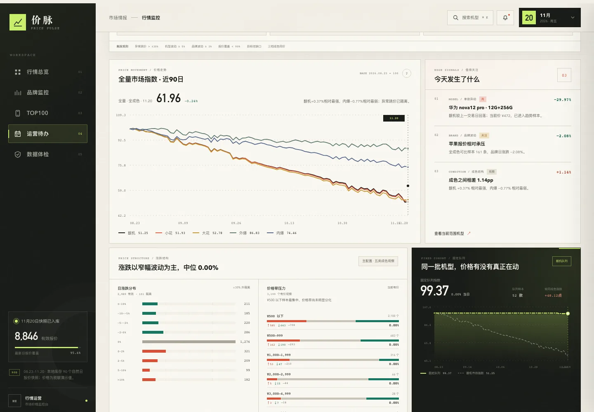
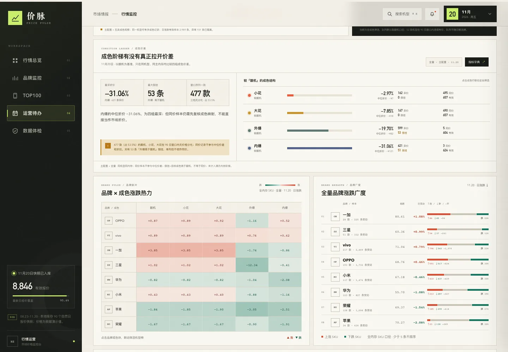
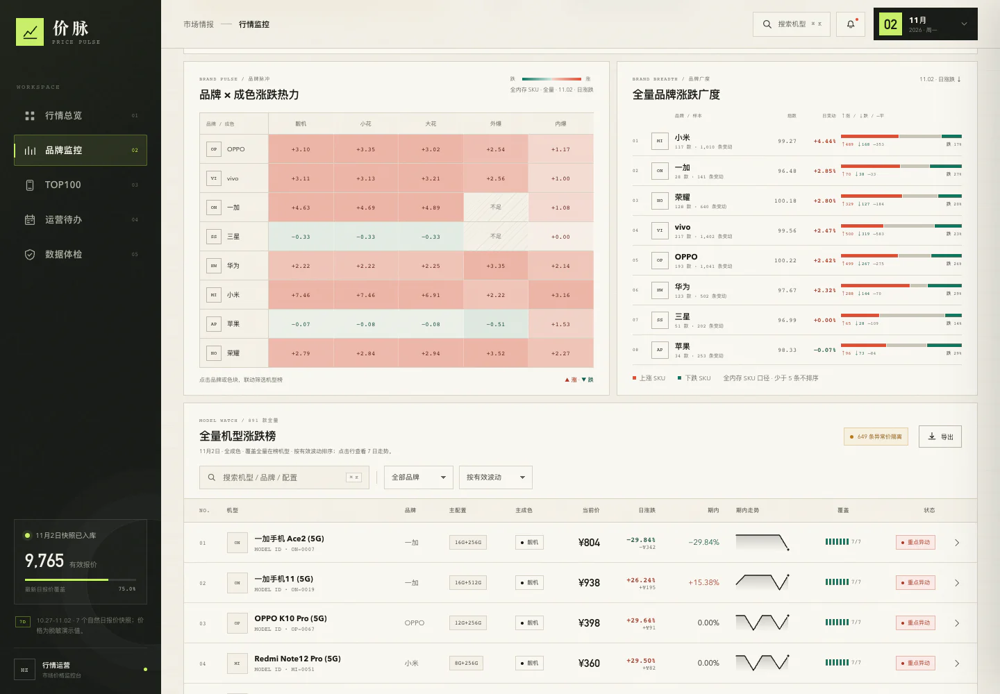
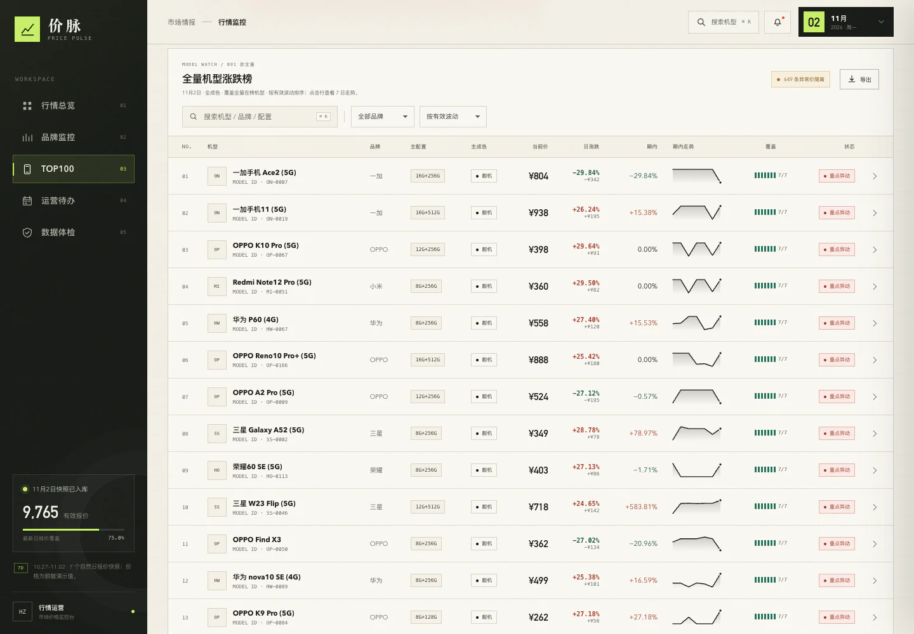
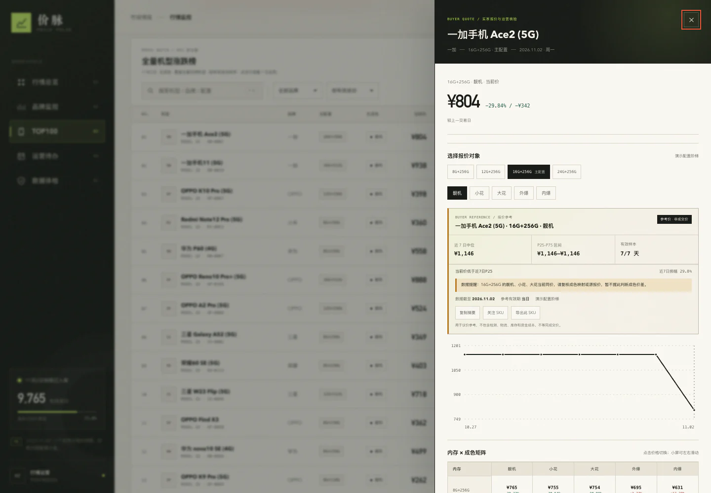
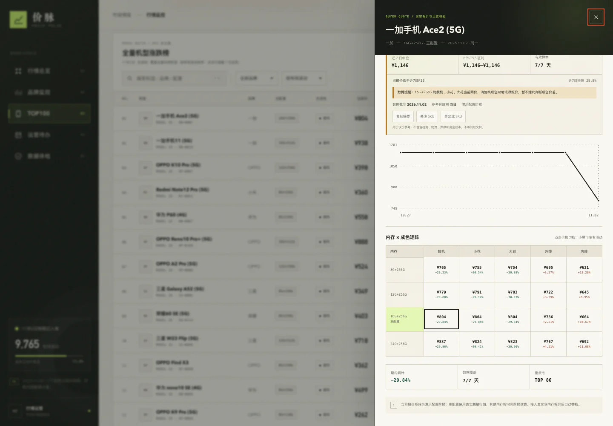
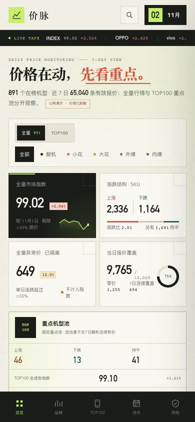

价脉 Price Pulse｜手机市场价格监控看板 PRD
文档版本：v1.2（评审稿）
更新日期：2026-11-20
文档状态：业务、数据、产品、设计与研发可评审；研发排期前需完成接口、口径、权限和设计走查确认
参考原型：https://hbicon.github.io/phone-market-price-monitor-preview/
原型版本：Prototype 0.7
数据基础：Boss 系统版报表501211（报价单：实时竞拍参考价）每日拉取，已入库 91 个自然日；看板默认分析最近 90 天，可在累计入库达到 180 天后扩展到 180 天
更新机制：每日05:00拉取前一日已结算业务日期，并强制重拉最近 3 个业务日，补齐延迟结算或未完整导出的批次
价格口径：市场参考价，非成交价、非结算价、非毛利价
适用端：桌面 Web 为主，390px 移动端可读；公网仅发布脱敏演示数据
0. 文档信息#
0.1 一页摘要#
价脉把每天分散在报价单中的「机型 + 内存 + 成色 + 市场价」统一成可追溯的日快照，并以市场指数、涨跌广度、品牌监控、机型榜、成色价差和买家报价详情形成一条完整的判断链路：
- 先确认数据是否新鲜、是否完整；
- 再判断市场整体涨跌、品牌强弱和重点机型异动；
- 进一步定位到机型、内存和成色；
- 最后进入单个 SKU，读取当前价、近 30 日中位价、P25–P75、有效样本和所在位置；
- 运营将异常和缺口转成可关闭的待办，买家将参考价转成可复制的报价摘要。
本期核心不是做交易系统，而是让运营和买家基于同一套可解释、可追溯的价格事实做判断。所有页面、接口和导出必须遵守同一唯一键与同一数据版本。
0.2 修订记录#
| 版本 | 日期 | 变更内容 | 状态 |
|---|---|---|---|
| v1.0 | 2026-11-14 | 完成产品定位、7 日数据方案、指标口径、功能需求、异常状态和交付阶段 | 方案评审稿 |
| v1.1 | 2026-11-16 | 补齐正式 PRD 结构；新增 8 张价格展示 UI 截图、逐页字段与交互规范、价格格式、组件状态矩阵、UI 自检及验收清单；明确演示数据冻结与真实接口替换边界 | 评审稿 |
| v1.2 | 2026-11-20 | 切换为 Boss 系统版报表 501211 的 90 天真实数据窗口；补齐每日 05:00 自动更新、SQLite 历史存储、180 天扩展、部分覆盖日隔离和 TOP100 规则；重截 8 张 90 天版本 UI 截图 |
评审稿 |
0.3 数据窗口与新鲜度说明#
当前公网原型默认展示 2026-08-23 至 2026-11-20 的 90 个日快照。数据来自 Boss 系统版报表 501211，本地已入库 2026-08-22 至 2026-11-20 的 91 个自然日；公网数据包随每日任务累积到最多 180 天并保留完整历史，页面按所选 7 / 30 / 90 / 180 天窗口重新归一；价格绝对值经过不可逆比例变换，保留真实日涨跌结构、样本量与异常隔离逻辑。
最新业务日 2026-11-20 为部分覆盖：9,250 个唯一键、8,846 条有价、657 款机型，约为近期最高覆盖的 71%。系统会保留该快照用于展示，但缺失 SKU 不参与涨跌、指数、品牌强弱和排名计算，不能把“没报”解释为“降价”。当前 90 天窗口内有 61 个覆盖不足日，页面在顶部和数据体检中持续披露。
正式产品必须把“数据新鲜度”做成一级状态，而不是只在页脚写更新时间。具体规则如下：
- 没有报价显示“—”，不补昨天的价格；
- 零价显示“零价/未报”，不当作有效市场价；
- 没有可比较的相邻两日报价，不计算涨跌幅；
- 品牌或成色样本少于 5 条，显示“样本不足”；
- 批次过期时显示“数据已过期”提示，同时保留最后一次成功发布的快照；
- 接口失败时展示最后一次成功数据及时间，不清空整页；
- 页面必须持续显示数据窗口、覆盖状态和最后更新时间，避免把部分覆盖或旧快照误认为完整实时行情；
- 每日更新必须可追溯：保留原始报表、归一记录、批次状态和更新时间。
1. 产品定义#
1.1 一句话定位#
面向手机回收、竞拍和报价业务，把每天分散在报价表单中的机型、内存、成色和市场价，变成一套可追溯、可比较、可行动的市场价格监控系统。
它回答四个问题：
- 今天市场整体在涨还是在跌？
- 哪些品牌、哪些机型、哪些成色在发生变化？
- 当前价格与近 30 日中位价、价格区间相比处在什么位置？
- 这组数据是否可信，异常和缺口由谁处理？
1.2 业务背景#
当前每天会产出一份 TOP1000 机型成色报价数据，核心字段为：
- 机型
- 内存
- 成色
- 市场价
成色固定为靓机、小花、大花、外爆、内爆五类。业务方需要按天观察市场整体、品牌和单机型的价格变化，同时让采购、报价和运营使用同一套参考价，减少在 Excel、群消息和人工汇总之间来回切换。
当前已完成近 90 天真实结构验证：891 款机型、2,607 个内存配置；2026-08-22 至 11-20 累计 820,320 个唯一键，其中 672,051 条有价，覆盖 8 个品牌。最新完整日 2026-11-19 为 13,020 个唯一键、12,284 条有价；最新业务日 2026-11-20 为 9,250 个唯一键、8,846 条有价。页面按实际入库结果动态计算，不写死这些数字。
1.3 产品目标#
| 层级 | 目标 | 衡量方式 |
|---|---|---|
| 业务目标 | 每日开盘前看清市场方向与重点异动 | 行情简报可替代人工 Excel 汇总；运营能在 2 分钟内定位主要变化 |
| 数据目标 | 同一指标在页面、导出和接口中口径一致 | 页面值与指标 SQL / API 结果一致；同一日期同一 SKU 只有一个确认价 |
| 运营目标 | 异常、缺价、同价映射问题有处理入口 | P0/P1/P2 待办可定位、可核验、可关闭 |
| 买家目标 | 报价时能看到参考价、区间和样本量 | 详情页可直接复制 SKU 摘要，不把参考价误当成交价 |
| 交付目标 | 先接表单，后接日更 API | 接口切换不改变页面口径和用户操作 |
1.4 本期不做什么#
- 不做成交、库存、毛利、资金成本的核算；
- 不承诺市场价就是成交价；
- 不在公网评审站展示真实原始价格；
- 不做自动定价或自动调价；
- 不把缺失报价推断成降价；
- 不先做复杂预测模型，先把可解释的日报监控闭合。
2. 用户与使用场景#
| 用户 | 核心任务 | 使用频率 | 关注内容 |
|---|---|---|---|
| 行情运营 | 判断市场方向、品牌强弱、机型异动 | 每日开盘前 | 指数、涨跌广度、异常、待办、简报 |
| 采购/报价人员 | 查看某个 SKU 的参考价和波动区间 | 每次报价前 | 当前价、近 30 日中位价、P25–P75、成色价差 |
| 数据运营 | 检查批次是否完整、异常是否可解释 | 每日入库后 | 有价率、缺内存、重复键、异常跳价、上游批次状态 |
| 业务负责人 | 看市场趋势和品牌结构 | 每日/每周 | 市场指数、品牌排名、TOP100、固定队列 |
| 产品/指标负责人 | 统一指标定义和责任人 | 版本迭代 | 指标字典、公式、来源、新鲜度、血缘 |
2.1 关键用户故事#
行情运营
作为行情运营，我希望打开页面先看到“今天发生了什么”，再按品牌或机型下钻，这样不用先看一堆明细表。
采购/报价人员
作为报价人员，我希望在同一个 SKU 上同时看到靓机、小花、大花、外爆、内爆的价格，以及近 30 日区间，这样能给客户一个有依据的参考价。
数据运营
作为数据运营，我希望在发布前知道今天哪些 SKU 零价、缺内存或跳价超过阈值，并能看到批次是否成功入库，避免把脏数据发到业务群。
业务负责人
作为负责人，我希望区分全市场和 TOP100 重点池，避免长尾机型掩盖重点机型的变化。
3. 产品结构#
3.1 信息架构#
| 层级 | 模块 | 解决什么问题 | 关键内容 | 主要操作 |
|---|---|---|---|---|
| 01 | 行情总览 | 今天市场是否在变 | 市场指数、涨跌广度、异常率、有价率 | 切换日期、范围、成色 |
| 02 | 行情简报 | 用一段话说什么值得看 | 方向、窗口累计、广度、品牌强弱、异动、数据质量、P0/P1/P2 建议 | 复制简报、跳转待办 |
| 03 | 运营待办 | 异常如何闭环 | 异常跳价、机型异动、品牌异动、缺价、目标池缺口、成色同价 | 筛选、打开详情、标记核验 |
| 04 | 价格走势 | 趋势是否持续 | 市场指数、成色指数、固定队列与市场指数对比 | 切换成色、查看日期 |
| 05 | 价格结构 | 涨跌分布和价格带在哪里 | 九档涨跌分布、六段价格带、样本量 | 查看承压价格带 |
| 06 | 成色价差 | 成色阶梯是否真实拉开 | 小花/大花/外爆/内爆相对靓机的价差、折扣、倒挂、同价 | 点击成色联动筛选 |
| 07 | 品牌监控 | 哪个品牌在变 | 品牌 × 成色热力、品牌涨跌广度 | 点击品牌/色块联动机型榜 |
| 08 | TOP100/机型榜 | 哪个机型在变 | 搜索、排序、覆盖、期内变化、CSV 导出 | 打开详情、关注 SKU、导出 |
| 09 | 机型详情 | 买家和运营看同一个 SKU | 当前价、日变化、近 30 日区间、内存 × 成色矩阵 | 切换内存/成色、复制摘要 |
| 10 | 数据体检 | 数据是否可信 | 窗口有效记录、匹配率、缺内存、异常、覆盖时间线 | 切日期、查看口径 |
| 11 | 指标字典与血缘 | 口径为什么这样算 | 定义、公式、来源、频率、责任角色、血缘链路 | 查询、评审、追责 |
3.2 首屏阅读顺序#
- 数据是否新鲜：批次日期、更新时间、有价率；
- 市场方向：指数、日涨跌、涨跌广度；
- 重点变化：异常、TOP100、品牌强弱；
- 可执行动作：P0/P1/P2 待办和简报；
- 下钻明细：机型榜、成色矩阵、买家参考。
这个顺序不能反过来。用户先知道“能不能用”，再看“发生了什么”，最后才看“哪个 SKU”。
4. 价格展示 UI 设计与验收规范#
本节截图来自 Prototype 0.7 的桌面端
1440 × 1000和移动端390 × 844。截图价格均为公网脱敏演示值，数据窗口为2026-08-23至2026-11-20；截图中的具体价格不构成业务真实报价，也不改变本文定义的计算口径。
4.1 设计目标与边界#
价格展示不是把 Excel 搬到网页上，而是帮助用户完成四个连续判断：
| 判断 | 用户问题 | 对应界面证据 | 不满足时的后果 |
|---|---|---|---|
| 能不能用 | 这批数据是否最新、是否完整 | 数据窗口、更新时间、有价率、异常率 | 旧价格被当成今日价 |
| 往哪走 | 市场、品牌、机型在涨还是跌 | 指数、涨跌广度、趋势、品牌热力 | 只能逐条看价格，无法形成方向感 |
| 为什么变 | 是哪个品牌、机型、成色或价格带在变 | 结构分布、成色价差、品牌和机型榜 | 看见变化但无法定位原因 |
| 怎么用 | 这个 SKU 当前处在什么位置 | 当前价、近 30 日中位、P25–P75、样本和价格位置 | 参考价缺少区间与可信度 |
设计约束：
- 先可信、后好看：数据新鲜度和样本状态优先于图表表现；
- 先聚合、后明细：从市场方向进入品牌、机型，再进入 SKU，不让用户先面对 1 万多行明细；
- 同口径联动：日期、全量/TOP100、成色、品牌只维护一份筛选状态，所有模块同步重算；
- 参考价不越界：任何面向买家或对外复制的价格，固定标注“参考价 · 非成交价”；
- 不用空缺代替解释：缺失、零价、无可比、样本不足和异常使用不同文案与状态，不能一律显示 0；
- 不只用颜色传义：涨跌同时使用正负号、箭头或文字；热力色块内部始终保留数值；
- 异常可定位、不可污染：异常价仍可在明细中核验，但不进入指数、趋势、结构分布和品牌强弱结论。
4.2 页面清单与评审范围#
| 编号 | 页面/状态 | 截图 | 主要用户 | 本期优先级 |
|---|---|---|---|---|
| UI-01 | 行情总览 | 01-overview.png |
行情运营、业务负责人 | P0 |
| UI-02 | 价格走势与价格结构 | 02-price-structure.png |
行情运营、数据运营 | P0 |
| UI-03 | 成色价差 | 03-condition-spread.png |
行情运营、数据运营 | P1 |
| UI-04 | 品牌监控 | 04-brand-monitor.png |
行情运营、业务负责人 | P0 |
| UI-05 | TOP100 / 全量机型榜 | 05-model-ranking.png |
行情运营、采购/报价 | P0 |
| UI-06 | 买家报价详情 | 06-buyer-quote-drawer.png |
采购/报价人员 | P0 |
| UI-07 | 内存 × 成色矩阵 | 07-memory-condition-matrix.png |
采购/报价人员 | P0 |
| UI-08 | 移动端行情总览 | 08-mobile-overview.png |
移动办公、门店报价 | P1 |
4.3 全局界面框架#
桌面端
- 左侧导航固定承载「行情总览、品牌监控、TOP100、运营待办、数据体检」，当前页面只能有一个选中态；
- 顶部保留机型搜索、数据提醒和业务日期切换；日期切换必须改变全站数据，不只改变右上角日期字样；
- 品牌快报带只用于快速感知，不作为精确报价依据；完整值必须能在下方模块中查到；
- 所有筛选在内容区顶部集中呈现，避免每个卡片拥有不同日期口径；
- 页面背景使用低对比纸张色，价格与状态使用更高对比层级；图表网格不抢数字；
- 底部固定展示报价参考边界与原型/数据版本，保证截图或导出后仍能识别口径。
移动端
- 保留侧栏中的五个一级入口，转为底部导航；
- 顶部只保留品牌、搜索、日期，避免挤压首屏价格信息；
- 首屏保留数据新鲜度、筛选、市场指数、涨跌广度、异常和有价率；
- 表格不强行压缩所有列，次要列隐藏并允许横向滑动；
- 抽屉在移动端占满屏幕，价格、成色切换和报价参考置于首屏；
- 所有点击区域不小于
44 × 44px，不依赖 hover 展示关键信息。
全局数据状态
| 状态 | 必须可见的信息 | 不允许出现 |
|---|---|---|
| 正常 | 业务日期、发布时间、data_version、当前筛选 |
只写“更新时间”但不写日期 |
| 过期 | “数据已过期”、最后成功日期、继续展示的快照版本 | 静默展示旧值 |
| 部分可用 | 已发布但存在零价、缺内存或异常的数量 | 把部分数据说成完整 |
| 无批次 | “暂无已发布批次”及处理入口 | 全页 0、空白或 undefined |
| 接口失败 | 最后成功快照、失败提示、重试入口和发生时间 | 清空整页或伪装成 0 |
4.4 行情总览#
页面目标：让运营在首屏 2 分钟内回答“数据能不能用、今天市场往哪走、哪里最值得处理”。
| 区域 | 价格与字段 | 展示规则 | 空值/异常 |
|---|---|---|---|
| 数据窗口 | 2026.08.23–11.20、90 个快照、更新时间、覆盖状态 |
始终显示起止日期和最后发布时间 | 过期用琥珀提示；无批次显示“暂无批次” |
| 市场指数 | 当前指数 61.56、日变化 −0.24%、90 日累计 −38.44% |
基准日 2026.08.23 = 100；剔除单日 ±30% 异常 |
无可比样本显示“无可比”，不显示 0 |
| 涨跌广度 | 上涨 2,358、下跌 2,303、持平 3,868、涨跌比 1.02 |
只统计相邻两日均有效且未隔离的 SKU | 分母为 0 时涨跌比显示“—” |
| 价格异常 | 302、异常率 3.5% |
异常值保留在明细，但不进入聚合指标 | 标签固定说明“已隔离” |
| 报价覆盖 | 有价 8,846 / 唯一键 9,250、有价率 95.6%、零价 404 |
零价计入唯一键、不计为有效市场价 | 有价率低时不能解读为价格下跌 |
| TOP100 重点池 | 涨、跌、平、指数、期内累计、进入 100 款 | 固定重点池单独计算，不与全量混合 | 池成员不足时显示缺口，不临时补位 |
| 行情简报 | 方向、窗口累计、品牌强弱、异常、P0/P1/P2 | 结论必须由当前筛选和数据版本生成 | 数据不完整时先写数据限制，再写行情结论 |
| 运营待办 | 优先级、类型、对象、证据、处理入口 | 每项可跳到对应筛选、机型或数据体检 | 不能只有“异常”而没有处理入口 |
交互
- 切换日期、全量/TOP100、成色后，指数、结构、TOP100、简报和待办同步刷新；
- 点击 TOP100 摘要进入完整 100 款榜单，并保留当前日期和成色；
- 点击简报中的品牌或机型，进入对应筛选结果；
- 复制简报时，同时复制数据窗口、样本约束、异常隔离说明和“参考价 · 非成交价”。
验收点
- 首屏不滚动即可看到数据窗口、有价率和至少一项市场方向指标；
- 异常数量、零价数量与有价率之间有可解释的算术关系；
- 所有卡片在同一筛选下使用同一
data_version； - 任何值缺失都不会显示
0、NaN、undefined或纯空白。
4.5 价格走势与价格结构#

页面目标：判断变化是否持续、涨跌集中在哪些幅度与价格带，并区分“市场动了”与“某一批样本动了”。
| 模块 | 展示字段 | 规则 |
|---|---|---|
| 价格走势 | 全量/TOP100、成色、日变化、7/30/90/180 日折线、基准日、异常隔离说明 | 基准日指数为 100；每个点对应一个已发布日期 |
| 涨跌分布 | 九档：<−10%、−10%～−5%、−5%～−2%、−2%～0%、0%、0%～2%、2%～5%、5%～10%、>10% |
展示样本数与占比；±30% 外异常不进入分布 |
| 价格带 | <¥500、¥500–999、¥1,000–1,999、¥2,000–2,999、¥3,000–4,999、¥5,000+ |
每段显示有效样本、中位变化、异常/无可比说明 |
| 固定队列 | 队列指数、队列样本、与同成色市场指数差值 | 队列成员按同一批机型固定，不随日期洗牌；按每日中位涨跌复利 |
| 右侧事件轨 | 机型异动、品牌异动、成色异动、当前范围入口 | 事件按重要度排序；点击可定位详情或筛选 |
交互
- hover/focus 折线点显示日期、指数、日变化和有效样本；
- 点击日期、图例或事件，不改变页面筛选之外的其他维度；
- 九档和六段即使无样本也保留层级位置，显示
0或“无可比”，保证分布结构可比较； - 移动端保留折线和总量，结构可折叠，不把标签堆叠成不可读状态。
验收点
- 折线点的日期与所选业务日期一致；
- 涨跌九档的样本总和与当前口径有效样本对得上；
- 异常价不进入趋势和结构，但在异常入口可找到；
- 固定队列成员与样本数稳定，不因日期切换替换成员。
4.6 成色价差#

页面目标：判断小花、大花、外爆、内爆相对靓机是否真实拉开价差，并优先识别同价映射问题。
| 字段 | 展示规则 | 业务解释 |
|---|---|---|
| 比较基准 | 同日、同机型、同内存的靓机价 | 跨内存、跨日期不可比 |
| 目标成色 | 小花、大花、外爆、内爆 | 四组成色分别计算 |
| 价差 | P目标 − P靓机 |
负数表示低于靓机，正数表示倒挂 |
| 折扣 | P目标 / P靓机 − 1 |
中位折扣不是平均折扣 |
| 有效异价样本 | 目标价与靓机价均有效且不相等 | 进入中位价差和中位折扣 |
| 同价样本 | P目标 = P靓机 |
单列，不进入中位价差 |
| 倒挂 | P目标 > P靓机 |
独立计数，不并入下跌或同价 |
| 窗口序列一致 | 靓机、小花、大花在当前分析窗口内逐日完全相同 | 作为映射复核信号，不当作真实无差价结论 |
当前截图数据仅用于说明：当前 90 天快照中全量有 477 款、约占 53.5% 的机型存在三档成色窗口序列同价，53 条存在倒挂。正式发布时这些数字必须由最新 data_version 重新计算，不得写入静态文案。
交互与验收
- 点击成色行联动全站成色筛选，筛选状态可见、可清除；
- 同价提示必须与中位价差同屏出现，避免用户只看折扣；
- 倒挂和同价不能因样式弱化而消失；
- 样本不足时显示“样本不足”，不计算中位结论；
- 主配置与全内存口径必须明确标注，不能混合展示。
4.7 品牌监控#

页面目标：从品牌层判断强弱，并定位是哪个成色在带动变化。
品牌 × 成色热力
- 单元格展示日涨跌幅，正值红色、负值绿色，同时保留正负号和数值；
- 颜色只表达方向与强度，不替代数字；
- 可比样本少于 5 条时显示“不足”，不使用接近 0 的伪数值；
- 点击品牌或色块联动筛选机型榜，并能看到当前筛选条件；
- 热力只反映有效 SKU，异常和不完整样本不进入。
品牌涨跌广度
- 展示品牌、指数、日变动、上涨/下跌/持平数量、可比样本和下跌面；
- 排序默认按日变动，可切换为样本量或下跌面；
- 品牌指数不能解释为该品牌所有机型的平均价格；
- 样本不足的品牌保留在列表但置底，不参与强弱排名。
验收点
- 点击任一色块后，机型榜品牌和成色筛选一致；
- 单元格值、品牌排行中的日变动与当前日期口径一致；
- 样本不足、异常隔离和颜色图例均有文本说明；
- 1080px 以下允许热力横向滚动，不压缩数字到不可读。
4.8 TOP100 与全量机型榜#

页面目标：定位当前价格变化最大的机型，并进入单一 SKU 核验。
| 列 | 展示规则 | 空值/异常 |
|---|---|---|
| 排名 | 当前榜单名次，与重点池固定名次分开 | 无有效价格不参与当前价排名 |
| 机型 | 标准机型名、model_id、品牌、主配置、主成色 |
映射失败显示待映射，不按名称猜测 |
| 当前价 | ¥804 千分位格式 |
零价显示“零价/未报”，缺失显示“—” |
| 日涨跌 | −29.84% / −¥342 |
无可比显示“—”，不能显示 0% |
| 期内变化 | 当前日期相对窗口首日的累计变化 | 窗口不完整时显示覆盖限制 |
| 期内走势 | 小型折线，不含异常点 | 缺失日断点，不补零 |
| 覆盖 | 7/7 等 |
少于目标覆盖显示原因 |
| 状态 | 正常、重点异动、异常隔离、覆盖不足、样本不足 | 状态不能只靠颜色 |
排序与导出
- 支持有效波动、有效涨幅、有效跌幅、异常优先、价格和重点池名次；
- 默认排序不把隔离异常混入“有效波动”；
- 导出字段、行数、当前筛选、数据版本与页面保持一致；
- 导出文件包含“参考价 · 非成交价”和生成时间；
- 点击行打开买家报价详情，键盘 Enter/Space 等效。
验收点
- TOP100 切换后能查看完整 100 款，排名与筛选可恢复；
- 异常行有单独状态入口，不能伪装成正常涨跌；
- 当前价、日涨跌、期内变化和走势使用同一 SKU 与同一数据版本；
- 无结果时说明“无符合筛选的机型”，并提供清除筛选。
4.9 买家报价详情#

页面目标：让采购/报价人员在一个可解释的价格上下文中完成议价参考，而不是只读一个孤立的当前价。
| 区域 | 字段 | 规则 |
|---|---|---|
| 价格头 | 机型、品牌、内存、日期、当前价、日变化、金额变化 | 必须同时给出价格和“较上一交易日” |
| 报价对象 | 内存按钮、成色切换 | 切换后所有价格、区间、矩阵选中态同步 |
| 近 30 日中位 | ¥674 |
仅使用当前 SKU 的有效日价格；缺失日不补 |
| P25–P75 区间 | ¥580–¥674 |
有效样本不足时区间显示“样本不足” |
| 有效样本 | 22/30 天 |
同时展示样本天数与总窗口，避免只看一个比值 |
| 价格位置 | 低于 P25 / 区间内 / 高于 P75 | 返回文本，不只显示颜色；无可比时明确说明 |
| 近 30 日振幅 | 30.0% |
仅在有效价格足够时计算 |
| 风险提示 | 同价映射、异常隔离、缺日、样本不足 | 放在价格附近，不只放在页脚 |
| 操作 | 复制摘要、关注 SKU、导出当前 SKU | 复制内容必须带日期、样本、参考价声明 |
交互
- 抽屉打开后焦点进入关闭按钮，
Esc可关闭，关闭后焦点回到触发机型； - 背景内容通过
inert隔离，避免键盘误操作； - 切换内存或成色时，标题、当前价、区间、图表、矩阵和操作对象一起更新；
- “关注 SKU”必须明确反馈成功/失败，不能只改变按钮样式；
- 复制摘要和导出失败时有可操作错误提示，不静默失败。
验收点
- 6 个价格字段能追溯到同一个
model_id + memory_id + condition + business_date； - 同价、异常、缺日和样本不足在抽屉内均可解释；
- 当前价、近 30 日中位、P25–P75、有效样本和图表不出现互相矛盾的数值；
- “参考价 · 非成交价”在首屏可见，复制和导出后仍存在。
4.10 内存 × 成色矩阵#

页面目标：在一个机型内快速比较不同内存、不同成色的当前价，避免跨页面反复查询。
| 元素 | 规则 |
|---|---|
| 行 | 标准内存，主配置有固定标识；行可点击切换当前报价对象 |
| 列 | 靓机、小花、大花、外爆、内爆，顺序不可变 |
| 单元格 | ¥804 + 日涨跌；选中态同时有边框、底色与 aria-pressed |
| 空单元 | 显示“—”或“暂无报价”，不显示 ¥0 |
| 异常单元 | 保留价格并标记异常，不能混入普通涨跌色 |
| 演示数据 | 矩阵使用报表真实多内存配置；公网价格脱敏，但内存数量与缺失关系不变 |
移动端
- 表头与首列保持可识别，价格区域允许横向滑动；
- 单元格不压缩到无法阅读，优先保证价格和日涨跌；
- 点击价格后当前 SKU 与上方参考价区域同步；
- 键盘用户可用 Tab 进入单元格，用 Enter/Space 选中。
4.11 移动端行情总览#

页面目标：在手机上仍能完成“确认日期 → 看方向 → 看重点池 → 进入全量名单”的最小闭环。
移动端展示顺序
- 品牌、搜索、业务日期；
- 数据窗口与有价率；
- 全量/TOP100 与成色筛选；
- 市场指数、涨跌结构；
- 异常和报价覆盖；
- TOP100 摘要；
- 简报与待办；
- 品牌、机型、详情和定价信息。
验收点
- 390px 宽度无页面级横向溢出；
- 首屏能看到日期、有价率和至少一个市场方向指标；
- 底部导航不遮挡最后一块内容，并提供足够底部安全区；
- 详情抽屉全屏，关闭按钮固定可见；
- 表格与矩阵只在各自容器内横滑，不带动整个页面横移。
4.12 价格、涨跌与样本的展示规范#
| 数据场景 | 标准展示 | 说明 |
|---|---|---|
| 正常正价 | ¥1,146 |
千分位、默认整数；原始数据有小数时才保留对应精度 |
| 零价 | 零价/未报 |
不使用 ¥0，不计入有效市场价 |
| 缺失 | — |
不补昨天、不补同品牌均价 |
| 上涨 | +2.54%、+¥135、▲ |
红色；正号必显 |
| 下跌 | −29.84%、−¥342、▼ |
绿色；使用负号而非括号 |
| 持平 | 0.00%、— 金额变化 |
与“无可比”明确区分 |
| 无可比 | 无可比 |
不显示 0%，不进入涨跌广度 |
| 异常 | 异常 · 已隔离 |
价格可查，不进入指数、趋势和排行 |
| 样本不足 | 样本不足 |
少于 5 条有效样本，不做强弱结论 |
| 数据过期 | 数据已过期 · 截至 11.20 |
保留最后快照，同时提示追批 |
| 数据加载 | 骨架屏 + “正在加载” | 不先显示 0 再跳变 |
| 参考价声明 | 参考价 · 非成交价 |
详情、导出、简报和图表脚注固定出现 |
格式化规则：
- 货币统一使用人民币符号和千分位；不要在同一个页面混用
元、块、¥； - 百分比统一保留 2 位小数，正数带
+，负数使用−（U+2212）； - 金额变化与百分比变化分开呈现，不能只给百分比让用户反推；
- 分子为 0、分母为 0 或样本不足时返回明确状态，不执行除法；
- 表格数字右对齐，价格和涨跌使用等宽数字特性；
- 复制到聊天工具或 CSV 时保留值的语义和缺失状态，不把
—转成空字符串。
4.13 组件状态矩阵#
| 状态 | 触发条件 | 价格区 | 涨跌区 | 图表/结构 | 用户动作 |
|---|---|---|---|---|---|
| 正常 | 当前批次已发布且样本充足 | 正常价格 | 正常涨跌 | 正常绘制 | 查看、复制、导出 |
| 加载中 | 首次加载或切换日期 | 骨架 | 骨架 | 骨架 | 等待，可取消 |
| 空结果 | 筛选无匹配 | 无结果说明 | — | 空状态图 | 清除筛选 |
| 零价 | market_price = 0 |
零价/未报 |
— |
排除 | 补价/核验 |
| 缺价 | 无唯一键记录 | — |
— |
断点 | 补价 |
| 无相邻日 | 当日或前一日无有效价 | 正常显示当前价（若有） | 无可比 |
只画有效点 | 等下一日/核验 |
| 样本不足 | 有效样本 < 5 | 显示价格 | 样本不足 |
不画结论线 | 扩大范围 |
| 异常跳价 | 单日变化 > ±30% | 显示价格 | 异常 · 已隔离 |
不进入聚合 | P0 核验 |
| 过期 | 距最后发布 > 24h | 显示快照价 | 保留最后值 | 保留快照 | 追批 |
| 接口失败 | 请求错误或超时 | 最后成功快照 | 最后成功值 | 旧快照 + 时间 | 重试 |
| 无权限 | 角色无价格/导出权限 | 权限提示 | 隐藏 | 隐藏敏感值 | 申请权限 |
4.14 交互与可访问性#
- 所有价格都可被读屏识别为货币，不依赖图形；图表提供文本摘要或数据表替代；
- 焦点顺序与视觉顺序一致，抽屉、弹窗关闭后焦点回到触发点；
- 状态同时使用文字、符号和颜色，色盲模式下仍能区分涨跌与异常；
- hover 信息必须能通过 focus 或点击获得，触屏不存在“只有悬停才能看”的关键数据；
- 日期和筛选变更时给出轻量加载反馈，但不频繁弹出 Toast；
- 数字变化不使用自动滚动计数，避免用户误读价格；
- 同一页面中只允许一个
aria-current="page"； - 对比度满足 WCAG 2.2 AA，交互目标不小于 44px；
- 导出按钮文案说明范围，例如“导出当前筛选 891 款”，而非模糊的“导出”。
4.15 UI 自检结论#
结论：当前 UI 已满足市场价格监控评审所需的 P0 信息框架，可进入业务与研发评审；但不能直接视为生产可用。
| 检查项 | 结论 | 证据/说明 |
|---|---|---|
| 是否先判断数据可信 | 通过 | 数据窗口、有价率、异常率和数据体检均在一级路径 |
| 是否先聚合再下钻 | 通过 | 首屏指数/广度 → 品牌 → 机型 → SKU 详情 |
| 是否能按天观察 | 通过 | 91 个自然日已入库，90 个快照参与当前窗口；支持日期回看和 7/30/90/180 日窗口 |
| 是否区分全量与 TOP100 | 通过 | 两套口径独立展示，TOP100 有固定池说明 |
| 是否暴露零价与异常 | 通过 | 零价、异常隔离、同价映射均可见 |
| 是否避免把参考价当成交价 | 通过 | 详情、简报、导出、页脚均有声明 |
| 是否有买家报价上下文 | 通过 | 中位、P25–P75、样本、位置、振幅与矩阵齐全 |
| 是否色彩可辨 | 通过（需回归） | 红涨绿跌 + 符号/数值；渐变区域仍需对比度回归 |
| 是否移动可读 | 通过 | 390px 首屏、底部导航、容器内横滑 |
| 是否可直接生产 | 未通过 | 缺少实时接口、真实全内存报价、服务端待办和权限审计 |
| 数据是否实时 | 通过（原型调度） | 每日 05:00 由本机 launchd 拉取；生产环境仍需改为服务端调度与告警 |
v1.2 已修复的展示问题：
- 修复 7/30/90/180 日窗口切换后指数、质量时间线、表格期内涨跌和买家报价未同步重算的问题；
- 稀疏价格图改为散点并保持缺失日断点，避免把“没报价”画成“暴跌”；
- 表格覆盖率最多聚合为 10 段，避免 90 天长窗口生成过密柱形；
- 顶栏、侧栏、简报与指标字典统一显示当前窗口，避免固定文案与筛选口径冲突；
- 重截 8 张 90 天版本截图，替换旧的 7 天冻结截图。
仍待正式版补齐：
- 生产级批次失败告警、迟到数据和上游回调状态；
- 任意历史区间、同环比和自定义窗口；
- 服务端待办、异常复核、审计与权限；
- 告警订阅和指标重算记录。
4.16 UI 验收清单#
- 8 张评审截图均可在仓库内打开，图片路径有效；
- 首屏在 1440×1000 和 390×844 下无页面级横向溢出；
- 日期、范围、成色、品牌变更后所有模块使用同一数据版本；
- 当前价、日涨跌、期内变化、中位、区间与样本均可追溯到唯一 SKU；
- 零价、缺价、无可比、样本不足、异常、过期和接口失败均有独立状态；
- 每张含价格页面均展示“参考价 · 非成交价”；
- 红涨绿跌同时有符号/文字，异常色不与涨跌色混用；
- 详情抽屉键盘可进入、可关闭、关闭后焦点正确返回；
- 移动端首屏保留数据新鲜度、核心指标和筛选；
- 导出内容与当前筛选、页面值、数据版本一致，且包含免责声明。
- 7D/30D/90D 切换后，指数、覆盖率、期内涨跌、质量时间线和抽屉参考区间同步更新；180D 在入库不足 180 天时禁用。
5. 数据方案#
5.1 当前数据源与标准字段#
第一期已接入 Boss 系统版「报价单价格取值明细」报表 501211，固定报价单为「实时竞拍参考价」。每日拉取字段包括：报价单名称、报价单日期、机型 ID、机型名称、品牌、内存 ID、内存、成色名称、应用价格（修正）。原始 XLSX 与归一记录保存在本地，公网仅发布脱敏结果；正式生产环境应改为服务端定时接口或数据平台任务。
| 字段 | 类型 | 必填 | 说明 |
|---|---|---|---|
business_date |
date | 是 | 报价业务日期，不使用入库时间替代 |
model_id |
string | 是 | 稳定机型 ID，不用机型名称作为主键 |
model_name |
string | 是 | 机型展示名，例如 iPhone 15 Pro |
brand |
string | 是 | 品牌标准名，例如 苹果、华为、小米 |
memory |
string | 是 | 标准内存，例如 128G、256G、512G、1T |
memory_id |
string | 是 | 稳定内存 ID，用于区分同展示名但不同配置 |
condition |
enum | 是 | 靓机、小花、大花、外爆、内爆 |
market_price |
decimal | 是 | 市场报价，允许 0，0 表示零价/未报，不表示成交 0 元 |
quote_source |
string | 否 | 报价来源或渠道，默认取批次来源 |
source_updated_at |
datetime | 否 | 上游实际更新时间 |
补充说明：
- “市场价”是业务参考价，不是成交价、结算价或毛利价；
- 同一机型不同内存是不同 SKU，必须分别报价；
- 价格是 SKU 的属性，不能参与唯一键；
- 机型名称可以变，但
model_id必须稳定； - 如果上游无法提供
model_id，需要先建立机型名称到 ID 的映射，不允许直接按名称猜。
5.2 唯一键和重复值处理#
唯一键定义为：
business_date + model_id + memory_id + condition
业务方已确认：源侧会单独计算价格，保证同一天、同一 model_id + memory_id + condition 只有一个市场价。系统不承担二次取平均或挑选某一条报价的职责；接入层的职责是验证该约束、记录批次并在违反时把该日批次标记为 invalid，不进入行情计算。
业务规则：
- 同一天、同一机型、同一内存、同一成色只允许一个确认价；
- 上游已经计算好唯一价，接口不应重复传多条；重复只可作为错误暴露，不能作为价格聚合输入；
- 如果同一唯一键出现冲突价格，该业务日批次标记为
invalid，不能静默取平均值、最后一条或第一条； - 运营在“数据体检”中看到冲突键和原始批次，确认后重新提交；
- 新批次覆盖同一天数据时，必须生成新批次号、填写覆盖原因并留下审计记录，不做无痕覆盖。
这条规则是行情可信度的底线。价格可以被修正，但不能悄悄改变。
5.3 数据分层#
Boss 报表 501211 / 每日 05:00 调度
↓
ODS 原始 XLSX（data/raw/YYYY-MM-DD.xlsx）
↓
DWD SQLite 标准报价明细（quotes，唯一键 + 价格）
↓
DWS 日快照与批次质量（snapshots，覆盖率 + 状态）
↓
ADS 最多 180 天聚合数据与公网脱敏 data.js
↓
行情看板 / 买家报价 / 数据体检
| 层 | 内容 | 保留要求 |
|---|---|---|
| ODS | data/raw/ 原始 XLSX，保留报表任务 ID、下载地址和入库时间 |
至少 1 年，便于回溯 |
| DWD | quotes 表，每 SKU 每日一行 |
至少 2 年 |
| DWS | snapshots 表，记录行数、有效数、零价、模型数、覆盖率和质量状态 |
至少 2 年 |
| ADS | 最多 180 天聚合数据 + 公网脱敏 assets/data.js，可按批次重算 |
可重建，不单独作为事实源 |
5.4 批次状态#
| 状态 | 含义 | 页面行为 |
|---|---|---|
pending |
已导入，尚未完成质量判定 | 暂不进入默认窗口 |
complete |
行数达到近期最高覆盖的 90% 以上 | 正常进入行情计算 |
warning |
行数处于近期最高覆盖的 75%–90% | 可展示，但提示“建议复核” |
partial |
行数低于近期最高覆盖的 75% | 可追溯展示；缺失 SKU 不参与涨跌与指数 |
invalid |
同日同 SKU 存在冲突价格或关键字段异常 | 整日隔离，不进入行情计算 |
failed |
拉取、下载或解析失败 | 保留上一成功快照并记录失败原因 |
批次写入必须以单日为单位原子完成：先删除该业务日旧记录，再写入新快照；失败时不得留下半批数据。每日任务会强制重拉最近 3 个业务日，用于修正延迟结算或首次导出不完整的批次。
5.5 数据质量门禁#
以下阈值是建议初值，正式上线前由数据运营确认并在后台配置。
| 级别 | 规则 | 处理 |
|---|---|---|
| 阻断 | 缺少日期、机型 ID、内存 ID、成色或价格字段 | 整日 invalid，不进入行情 |
| 阻断 | 同一唯一键出现冲突价格 | 整日 invalid，列出冲突键 |
| 阻断 | 价格不是有限数值或为负数 | 整日 invalid |
| 阻断 | 报表日期、报价单名称与请求不一致 | 拒绝入库 |
| 警告 | 行数低于前后 7 天最高覆盖的 75% | 标记 partial，缺失 SKU 不参与涨跌 |
| 警告 | 行数处于前后 7 天最高覆盖的 75%–90% | 标记 warning，提示复核 |
| 警告 | 缺内存展示名或零价记录 | 单独统计，不当作有效市场价 |
| 警告 | 单日涨跌超过 ±30% | 进入异常清单，不进入指数/趋势 |
| 警告 | 靓机、小花、大花完整窗口序列同价 | 标记成色映射复核，不直接当作真实折价 |
| 警告 | 目标池少于 1,000 款 | 进入目标池缺口待办 |
当前原型对 partial / warning 采取“保留并强披露”策略，而不是整日丢弃，原因是源报表确实存在真实的部分覆盖；如果生产环境要求整批阻断，可在此基础上配置最小覆盖率阈值。任何缺失 SKU 都不得补零、补昨日价或按降价处理。
6. 接口方案#
6.1 数据接入：Boss 报表定时拉取（当前）#
原型阶段由 macOS launchd 每日 05:00 调用 run_daily_update.sh：
python3 sync_market_data.py --days 180 --end-date <前一日> --refresh-last 3 --workers 3
python3 build_dashboard_data.py --days 90 --output data/real/market_data_90d.js
python3 prepare_public_data.py data/real/market_data_90d.js assets/data.js
执行顺序为：拉取前一日已结算业务日并强制重拉最近 3 日 → 写入 SQLite → 重建最多 180 天数据（页面默认窗口仍为 90 天）→ 脱敏生成公网数据 → 数据变化时提交并等待 Pages 发布。定时任务不保存 Token 或凭证，复用本机已授权的 Boss CLI 登录态。
正式环境应把上述本机任务迁移到服务端调度，并接入失败告警、重试和运行审计。以下写入接口是正式 API 化的目标形态。
POST /open-api/v1/quote-batches
Content-Type: application/json
X-App-Id: price-pulse-data
X-Timestamp: 1793866569
X-Nonce: 2f3a...
X-Signature: hmac-sha256(...)
Idempotency-Key: 20261119-quote-001
请求体示例：
{
"batch_date": "2026-11-19",
"source": "daily-quote-form",
"source_updated_at": "2026-11-19T18:06:00+08:00",
"quotes": [
{
"model_id": "AP-0033",
"model_name": "iPhone XS",
"brand": "苹果",
"memory": "512G",
"condition": "靓机",
"market_price": 839
},
{
"model_id": "AP-0033",
"model_name": "iPhone XS",
"brand": "苹果",
"memory": "512G",
"condition": "小花",
"market_price": 806
}
]
}
响应示例：
{
"batch_id": "qb_20261119_001",
"status": "published",
"business_date": "2026-11-19",
"total": 13020,
"valid": 9765,
"zero": 3255,
"rejected": 0,
"coverage": 0.75,
"published_at": "2026-11-19T18:10:12+08:00",
"data_version": "2026-11-19.1"
}
接口约束：
- 使用 App ID + HMAC 签名，不接受匿名写入；
Idempotency-Key与payload_hash双重幂等；- 同一天重复批次必须返回同一结果或明确的覆盖审批错误；
- 单次请求建议不超过 20,000 条；超过时拆批，使用同一
batch_id汇总； - 所有拒绝记录返回
model_id、memory、condition、错误码，不返回无意义的“失败”； - 接口成功后，页面通过
data_version判断是否需要刷新。
6.2 读取接口：看板与详情#
| 接口 | 用途 | 关键参数 |
|---|---|---|
GET /api/v1/dashboard/overview |
首屏指标、简报、待办摘要 | date、scope、condition |
GET /api/v1/dashboard/trends |
市场/成色/固定队列趋势 | date、scope、condition |
GET /api/v1/dashboard/structure |
涨跌分布、价格带、成色价差 | date、scope、condition |
GET /api/v1/brands |
品牌热力和涨跌广度 | date、scope、condition |
GET /api/v1/models |
机型列表、搜索、排序、分页 | q、brand、sort、page |
GET /api/v1/models/{model_id}/quote |
单机型内存 × 成色报价与区间 | date、memory、condition |
GET /api/v1/data-quality |
批次、覆盖、异常、缺内存和血缘状态 | date |
GET /api/v1/ops-tasks |
运营待办和核验状态 | date、status |
GET /api/v1/metric-dictionary |
指标定义、公式、责任人、新鲜度 | version |
读取接口统一返回：
{
"data_version": "2026-11-19.1",
"business_date": "2026-11-19",
"published_at": "2026-11-19T18:10:12+08:00",
"freshness": "fresh",
"data": {}
}
freshness 建议分为：
fresh：已发布且未超过 24 小时；stale：超过 24 小时未更新；missing：没有可用批次；partial：批次已发布但存在隔离记录。
6.3 正式接入后的数据替换边界#
当前原型已使用报表中的真实多内存配置：90 天窗口共 2,607 个 model_id + memory_id 组合，机型详情中的内存 × 成色矩阵不再生成 synthetic-demo 阶梯。公网只对价格绝对值做不可逆比例变换，保留真实的内存数量、成色结构、缺失日和涨跌关系。
正式接入后：
- 数据由服务端定时拉取或推送，不再依赖本机
launchd； - 每个
model_id + memory_id + condition独立比较，不跨内存聚合冒充同一 SKU； - 指数、品牌、成色价差和买家报价统一读取同一份已发布快照；
- 增加批次重跑、失败告警、审计和权限控制；
- 公网继续只发布脱敏数据，不暴露原始报价、内部接口地址或凭证。
7. 指标口径#
7.1 指标体系#
| 指标 | 业务定义 | 计算公式 | 数据来源 | 更新频率 | 责任角色 |
|---|---|---|---|---|---|
| 市场指数 | 可比 SKU 的日价格变化中位数，复利成指数 | I_t = I_{t-1} × (1 + median(ΔP/P_{t-1}))，基准日 I=100 |
日快照 + 相邻日匹配 | 日更 | 数据运营 |
| 涨跌广度 | 当日 SKU 涨、跌、平的结构 | ↑n / ↓n / =n；下跌面 ↓n ÷ 可比样本 |
日快照 + 相邻日匹配 | 日更 | 行情运营 |
| 异常率 | 超过跳价阈值的 SKU 占比 | ` | P_t/P_{t-1}-1 | > 30%` 的数量 ÷ 可比样本 | 日快照 |
| 有价率 | 有正价报价的 SKU 比例 | 有效唯一键 ÷ 原始唯一键 | 日报批次 | 日更 | 数据运营 |
| TOP100 指数 | 固定重点机型的独立指数 | 近 7 日靓机连续有价，按最新靓机价取前 100，指数算法同市场指数 | TOP100 固定池 | 日更，池成员 7 日固定 | 行情运营 |
| 固定队列指数 | 同一批完整覆盖机型的可比趋势 | C_t = C_{t-1} × (1 + median(队列内日涨跌)) |
固定队列 | 日更 | 数据运营 |
| 成色价差 | 同机型、同内存下目标成色相对靓机的价差 | P目标 − P靓机；折扣 P目标/P靓机−1 |
主配置/全内存 | 日更 | 行情运营 |
| 成色倒挂 | 目标成色价格高于靓机 | 价差 > 0 的数量 | 成色价差明细 | 日更 | 行情运营 |
| 三档同价 | 靓机/小花/大花完整序列一致 | 三组序列逐日相等 | 成色明细 | 日更 | 数据运营 |
| 近 30 日中位价 | 买家参考价的中位水平 | median(P₁…P₇) |
日快照 | 日更 | 行情运营 |
| 近 30 日区间 | 买家参考价的四分位区间 | P25–P75 |
日快照 | 日更 | 行情运营 |
| 目标池进度 | 在榜机型占目标池的比例 | 在榜机型 ÷ 1,000 | 机型主数据 | 日更 | 产品/运营 |
7.2 计算原则#
- 只比较相邻两日同一唯一键；
- 新增、退出、零价和缺失日不当作涨跌；
- 指数使用中位数，不使用均值，降低高价和极端值影响；
- 单日涨跌超过 ±30% 进入异常清单，不进入指数、趋势和品牌热力；
- 品牌或成色有效样本少于 5 条时标记“样本不足”；
- 成色价差只比较同日、同机型、同内存；
- 同价样本单列，不参与中位价差；
- 倒挂单独计数，不能并入“下跌”或“同价”；
- 所有百分比保留合理精度，页面展示与接口数值使用同一精度规则；
- 任何累计指标都要能按
data_version重算，不能依赖前端临时状态。
7.3 展示解释#
- “市场价”是报价参考，不是成交价；
- “下跌”只代表同一 SKU 相对前一交易日下降；
- “有价率低”不等于“价格下跌”，可能是零价、缺货或未报；
- “TOP100”是重点池，不代表市场成交额排名；
- “同价”是待核查的数据质量信号，不是真实的成色无差价结论；
- “固定队列”不能被解释为全市场平均价格。
8. 功能需求#
8.1 行情总览#
目标：让运营在首屏判断市场方向和数据可信度。
功能：
- 日期选择：默认最新已发布批次；
- 范围切换：全量 891 款 / TOP100 100 款；
- 成色筛选：全部、靓机、小花、大花、外爆、内爆；
- 市场指数卡：当前指数、日变化、基准日；
- 涨跌结构卡：上涨、下跌、持平、涨跌比；
- 异常价格卡：异常数量、异常率、隔离说明；
- 覆盖率卡：有效报价 / 唯一键、有价率、零价数；
- 数据新鲜度条：已发布、更新于、是否过期。
验收：
- 切换日期/范围/成色后，所有首屏卡片同步重算；
- 没有批次时显示“暂无已发布批次”，不显示 0；
- 批次过期时显示上次成功时间和醒目的过期提示；
- 任何卡片不能出现
undefined、NaN或空白。
8.2 行情简报#
目标：让运营可以直接复制一段可读结论，不再手工写群消息。
简报必须包含：
- 当前日期、范围、成色；
- 市场方向：日变化和当前窗口累计；
- 涨跌广度：上涨/下跌/持平/下跌面；
- 品牌强弱：强、弱品牌及可比样本；
- 最大异动：机型和成色；
- 数据质量：异常、有价率、同价风险；
- P0/P1/P2 行动建议；
- 口径脚注。
复制文本必须明确“参考价、非成交价”和“异常已隔离”，不能只复制好看的数字。
8.3 运营待办#
目标：把“看见问题”变成“有负责人可以关闭”。
触发规则：
- 异常跳价 > ±30%；
- 机型有效波动 ≥ 5%；
- 品牌有效波动 ≥ 3%；
- 报价覆盖 < 90%；
- 目标池缺口；
- 三档成色同价；
- 缺内存、重复键或批次过期。
待办字段：
- 优先级：P0/P1/P2；
- 类型：价格核验、数据缺口、映射检查、行情跟进；
- 对象：批次、品牌、机型或 SKU；
- 证据：当前值、上一日值、样本量、阈值；
- 操作：筛选、打开详情、标记核验、备注；
- 状态：待处理、核验中、已解决、忽略（忽略必须填原因）。
原型阶段可使用浏览器本地状态，正式版必须服务端保存并记录操作人和时间。
8.4 价格走势与结构#
- 市场指数按日绘制折线；
- 全量与 TOP100 分开；
- 成色指数可切换；
- 固定队列与同成色市场指数并列；
- 涨跌分布为九档；
- 价格带为六段；
- 每个结构块展示有效样本、异常样本和中位变化；
- 不以饼图表达价格变化，不使用颜色作为唯一编码。
8.5 成色价差#
正式版规则：
- 比较基准：同日、同机型、同内存的靓机；
- 目标成色：小花、大花、外爆、内爆；
- 价差：
P目标 − P靓机； - 折扣：
P目标 / P靓机 − 1； - 倒挂：
P目标 > P靓机； - 同价：
P目标 = P靓机，单列，不进入中位价差； - 样本：有效异价样本、同价样本、倒挂样本、全部有效样本；
- 默认展示全量异价样本中位数，同时显示同价占比；
- 当前原型已接入真实多内存配置；成色价差仍按同机型同内存的主配置口径聚合，避免不同配置混合比较；
- 同价比例超过预警阈值时，优先提示“成色映射复核”，不把中位折价包装成市场结论。
8.6 品牌监控#
- 品牌 × 成色涨跌热力；
- 品牌涨跌广度：上涨、下跌、持平、可比样本、下跌面；
- 样本少于 5 条标记“样本不足”；
- 点击品牌/色块联动机型榜；
- 品牌指数不能与单机型涨跌混读。
8.7 机型榜与详情#
机型榜：
- 搜索机型、品牌、配置；
- 品牌筛选；
- 排序：有效波动、涨幅、跌幅、异常、价格、池内名次；
- 显示当前价、日涨跌、期内变化、覆盖、状态；
- 支持加载更多和 CSV 导出；
- 异常值不进入默认有效波动排序，但可单独筛选。
详情抽屉：
- 机型、品牌、内存、日期；
- 当前价和日变化；
- 近 30 日中位价、P25–P75、有效样本；
- 价格位置、波动幅度；
- 内存 × 成色矩阵；
- 期内累计变化、覆盖天数、重点池名次；
- 复制摘要、关注 SKU、导出当前 SKU；
- 明确“参考价，非成交价”。
8.8 数据体检与口径#
- 当前窗口有效记录和原始唯一键；
- 最新两日匹配率；
- 内存缺失数；
- 异常跳价数；
- 每日覆盖率时间线；
- 批次状态和上游更新时间；
- 指标字典：定义、公式、来源、更新频率、责任角色、当前新鲜度；
- 数据血缘：日报报价单 → SKU 归一 → 质量隔离 → 日快照 → 指标计算 → 看板。
专业版还应增加：
- 批次详情和失败原因；
- 冲突键列表；
- 零价/缺内存明细下载；
- 指标重算记录；
- 数据版本切换和回滚。
9. 空值、异常与状态设计#
这是本产品最重要的可信度设计，不能用“页面空白”代替业务解释。
| 场景 | 页面表现 | 是否进入指标 | 运营动作 |
|---|---|---|---|
| 没有当日批次 | “暂无已发布批次”，保留上一批 | 否 | 检查上游/调度 |
| 批次过期 | 顶部显示过期警告和最后更新时间 | 只展示最后快照 | 追批、确认是否停报 |
| SKU 无报价 | 显示“—”，不计作降价 | 否 | 补价或标记缺货 |
| 零价 | 显示“零价/未报”，有价率下降 | 否 | 核对是否缺价或业务停报 |
| 无相邻日可比 | 显示“—”，不显示 0% | 否 | 继续等下一日 |
| 异常跳价 | 仍保留价格，标记“异常” | 不进趋势/排行 | P0 核验 |
| 三档同价 | 单列同价样本，显示质量提示 | 不进入中位价差 | 复核映射 |
| 样本不足 | 显示“样本不足” | 不做强弱结论 | 补样本 |
| 接口失败 | 保留最后成功数据 + 错误状态 | 使用旧快照 | 技术/数据处理 |
空值不是错误值，不能把空值填成 0；异常不是业务波动，不能直接进入趋势。
10. 权限与安全#
| 角色 | 查看行情 | 导出 | 维护批次 | 维护待办 | 指标配置 |
|---|---|---|---|---|---|
| 行情运营 | 是 | 是 | 否 | 是 | 否 |
| 采购/报价 | 是 | 按权限 | 否 | 仅查看 | 否 |
| 数据运营 | 是 | 是 | 是 | 是 | 是 |
| 业务负责人 | 是 | 是 | 否 | 是 | 否 |
| 系统管理员 | 是 | 是 | 是 | 是 | 是 |
安全要求：
- 生产数据只在内网或受控工作台展示；
- 公网评审站只放脱敏演示数据，不接生产接口；
- 导出、批量下载、查看历史价格必须留审计日志；
- 价格字段按角色控制，防止销售、采购和外部人员越权获取；
- Webhook、API Secret、Token 不写入前端、不提交仓库；
- 数据水印或导出标识按公司安全规范接入。
11. 非功能要求#
| 维度 | 要求 |
|---|---|
| 性能 | 首屏 API P95 < 800ms；页面可交互 < 2s；机型表分页查询 < 1s |
| 数据量 | 13,000 条/日、约 470 万条/年，按日分区；保留至少 2 年 |
| 可用性 | 行情读取服务月度可用性 ≥ 99.5%；批次发布失败不影响上一版 |
| 一致性 | 页面、导出、API 使用同一 data_version 和同一指标 SQL |
| 可追溯 | 每次发布保留批次号、原始文件哈希、操作人、发布时间、变更原因 |
| 可回滚 | 支持切回上一已发布批次，但必须留下审计记录 |
| 兼容性 | Chrome/Edge/Safari 最近两个大版本；1366px 桌面和 390px 移动可读 |
| 可访问性 | 键盘可操作；图表有文本替代；颜色不作为唯一编码；axe 0 violations |
| 可观测性 | 批次接收、校验、发布、接口错误、页面接口失败均有日志和告警 |
12. 交付阶段#
阶段 0：原型验证（当前）#
- 已完成 PC/移动端交互原型；
- 已完成 90 天行情、品牌、机型、成色价差、数据体检和指标字典；
- 已接入 91 个自然日真实报表结构，支持 7/30/90 天窗口，180 天窗口待累计入库后启用；
- 已完成每日 05:00 本机自动拉取、SQLite 存储、脱敏发布和 Pages 更新；
- 公网为脱敏演示数据，用于确认信息架构、指标口径和页面优先级，不作为生产数据源。
阶段 1：生产数据接入正式化#
- 固定报表字段、报价单筛选条件和数据版本；
- 完成机型 ID、品牌、内存、成色的标准映射；
- 增加批次导入、质量门禁、异常隔离和发布状态；
- 看板从静态
data.js切换到只读 API； - 验收：同一天同一 SKU 只能有一个确认价，发布可回溯。
阶段 2：服务端每日自动更新#
- 将本机
launchd迁移到服务端调度，数据源每日推送或定时拉取； - 批次幂等、签名校验、失败重试和告警；
- 自动重算指数、品牌、TOP100、成色价差；
- 页面显示批次新鲜度，超过阈值自动提示；
- 验收：连续 14 个自然日无人工干预更新，失败时保留上一批并通知责任人。
阶段 3：运营闭环与治理#
- 待办服务端化、责任人、备注和审计；
- 关注 SKU、告警通知、导出审批；
- 自定义历史区间、同环比、历史回放；
- 指标字典版本管理和指标重算记录；
- 与内部账号、组织架构、权限系统打通。
13. 验收标准#
13.1 数据验收#
- 唯一键
business_date + model_id + memory_id + condition无重复； - 同日同 SKU 不出现多价；
- 每条记录可追溯到批次、来源和发布时间；
- 零价、缺内存、异常跳价分别有数量统计；
- 最新批次丢失或校验失败时，上一批仍可正常展示；
- 页面任何指标都能由同一日期和
data_version重算； - 指数字段与指标 SQL / API 结果一致。
13.2 页面验收#
- 1440px 和 390px 无页面级横向溢出；
- 日期、全量/TOP100、成色、品牌筛选联动正确；
- 没有有效样本时显示“—/样本不足”，不显示 0 或空白；
- 指标字典的公式、来源、责任角色和新鲜度可查看；
- 成色价差显示异价、同价、倒挂和有效样本；
- 详情抽屉可访问、可用键盘关闭、关闭后焦点回到触发点；
- 控制台无脚本错误，axe 扫描 0 violations。
13.3 接口验收#
- 相同
Idempotency-Key重试不会产生重复批次； - 阻断项存在时整批失败，错误可定位到 SKU；
- 成功批次可原子发布；
- 过期批次返回
freshness=stale； - 接口不返回未经脱敏的公网数据；
- 接口异常时前端保留最后成功数据并显示错误状态。
14. 风险与待确认项#
| 风险/待确认 | 影响 | 建议 |
|---|---|---|
| 2026-11-20 最新批次仅覆盖 71% | 当日缺失 SKU 不参与涨跌，最新日结论样本少于完整日 | 05:00 强制重拉最近 3 个业务日；页面持续标记“部分覆盖” |
| 90 天窗口有 61 个覆盖不足日 | 长窗口指数更依赖可比 SKU，不能把覆盖波动当行情波动 | 只比较相邻日均有效的同 SKU；缺失不补零、不按降价处理 |
| 891 款中部分机型三档成色窗口序列同价 | 可能把映射问题当成真实折价 | 先复核源报表映射；同价样本单列并进入运营待办 |
| 每日任务运行在本机 Mac | 设备休眠、离线或登录态失效会导致当天未更新 | 生产环境迁移服务端调度，增加超时、失败告警和补跑 |
| 零价记录仍占一定比例 | 有价率低、指数样本减少 | 增加零价原因、缺货/停报标记和补价待办 |
| 品牌/机型名称不统一 | SKU 无法稳定比较 | 建立主数据映射，禁止按名称猜 ID |
| 上游延迟或接口失败 | 看板过期或旧值误导 | 批次状态、过期提示、告警和最后成功快照 |
| “市场价”被误读为成交价 | 对外报价产生争议 | 所有详情、导出和简报固定标注参考价边界 |
| TOP100 选池规则变化 | 历史指数不可比 | 池成员按周期固定，变更记录版本 |
| 导出权限过大 | 价格外泄 | 按角色控制导出和水印，保留审计 |
需要业务确认：
- 每日数据的最晚到达时间、补数截止时间和责任部门；
- 前一日报价在 05:00 是否已完成结算；若未完成，是否需要把调度后移到 06:00 或增加午间补跑；
- “市场价”的准确定义和报价来源；
- 目标 1,000 款机型的维护责任人；
- 历史数据保留年限和对外导出范围；
- TOP100 选池是按 7 日固定、按周固定还是按月固定；
- 同价样本的复核规则和处置 SLA。
附录 A：DWD 报价事实表建议结构#
CREATE TABLE dwd_quote_daily (
business_date DATE NOT NULL,
model_id VARCHAR(64) NOT NULL,
memory_id VARCHAR(64) NOT NULL,
memory VARCHAR(32) NOT NULL,
condition VARCHAR(16) NOT NULL,
market_price DECIMAL(12,2) NOT NULL,
price_status VARCHAR(16) NOT NULL, -- valid / zero
batch_id VARCHAR(64) NOT NULL,
data_version VARCHAR(32) NOT NULL,
source VARCHAR(64) NOT NULL,
source_updated_at TIMESTAMP NULL,
is_anomaly BOOLEAN NOT NULL DEFAULT FALSE,
created_at TIMESTAMP NOT NULL DEFAULT CURRENT_TIMESTAMP,
PRIMARY KEY (business_date, model_id, memory_id, condition)
);
CREATE INDEX idx_quote_brand_date
ON dwd_quote_daily (business_date);
CREATE INDEX idx_quote_model_date
ON dwd_quote_daily (model_id, business_date);
建议额外建立：
dim_model：机型 ID、标准名、品牌、别名、状态；dim_memory：内存标准值、展示值、排序；meta_batch：批次号、状态、哈希、发布人、发布时间；dq_issue：质量问题、SKU、规则、严重级别、处理状态；dws_*：按日聚合的指数、品牌、成色价差和机型统计。
附录 B：接口返回的最小错误结构#
{
"batch_id": "qb_20261102_001",
"status": "failed",
"error_code": "DUPLICATE_SKU_KEY",
"message": "同一日期、机型、内存、成色存在重复确认价",
"issues": [
{
"model_id": "AP-0033",
"memory": "512G",
"condition": "靓机",
"row_numbers": [12, 47]
}
]
}
错误信息必须能让人定位到具体 SKU 和原始行，而不是只返回“系统异常”。